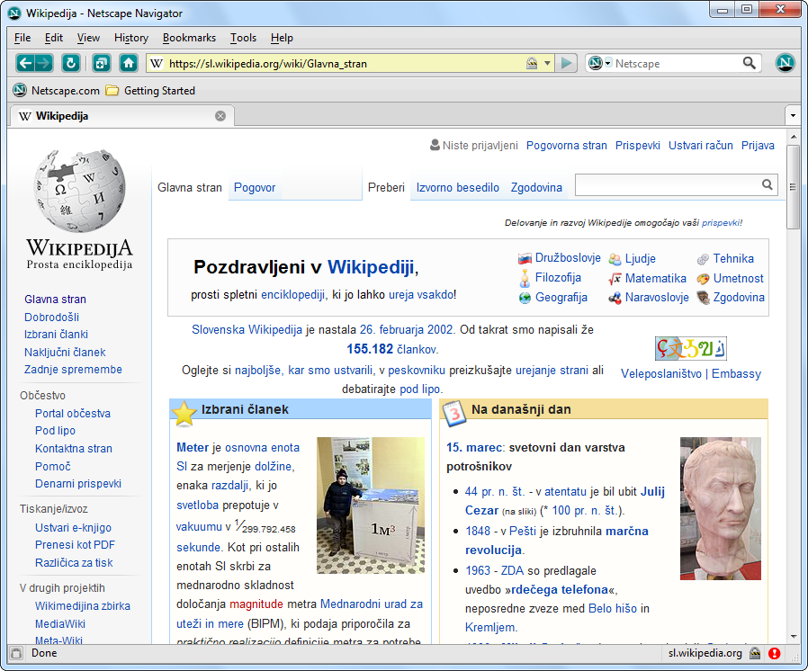

The history of web browsers follows the growth of the modern internet. Early browsers were made to display linked documents, but over time they became much more advanced and competitive.
As browsers evolved, they added support for images, tables, forms, multimedia, and scripting. This changed the browser from a simple reading tool into a platform for modern applications.
